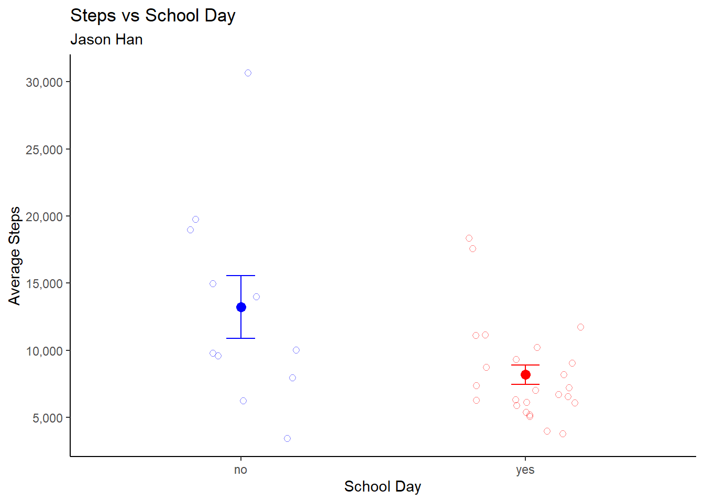

── Attaching core tidyverse packages ──────────────────────── tidyverse 2.0.0 ──
✔ dplyr 1.1.4 ✔ readr 2.1.5
✔ forcats 1.0.0 ✔ stringr 1.5.1
✔ ggplot2 3.5.2 ✔ tibble 3.2.1
✔ lubridate 1.9.4 ✔ tidyr 1.3.1
✔ purrr 1.0.4
── Conflicts ────────────────────────────────────────── tidyverse_conflicts() ──
✖ dplyr::filter() masks stats::filter()
✖ dplyr::lag() masks stats::lag()
ℹ Use the conflicted package (<http://conflicted.r-lib.org/>) to force all conflicts to become errors
library(dplyr)library(here)
here() starts at C:/Users/jzhan/OneDrive/Desktop/github/ENVS-193DS_homework-03
library(gt)library(janitor)
Attaching package: 'janitor'
The following objects are masked from 'package:stats':
chisq.test, fisher.test
library(here)
Problem 1a. Personal data
I could calculate the mean number of steps I took on school days versus non-school days to compare how my physical activity differs depending on whether I have class. This would be informative because on school days I often walk between classes, while on non-school days I tend to be working at my job which requires constant movement for a few hours, so I expect to have more steps on those days.
steps_data <-read.csv(here("data", "steps_data.csv"))steps_data_clean <- steps_data |>clean_names() |>#cleans the column names to have underscores drop_na() |>mutate(steps =as.numeric(gsub(",", "", steps))) # removes commas
###Problem 1b. Data Visulization
steps_data_summary <- steps_data_clean |>group_by(school_day) |>#group data by sitesummarise( #calculating summary statisticsn =n(),mean =mean(steps),sd =sd(steps),se = sd /sqrt(n),t_crit =qt(0.975, df = n -2),ci_lower = mean - t_crit * se,ci_upper = mean + t_crit * se) |>select(school_day, mean, sd, se, ci_lower, ci_upper) |>#only display certain statisticsmutate(across(mean:ci_upper, ~round(.x, 1))) #rounding those statisticsggplot(steps_data_clean,aes(x = school_day, y = steps, color = school_day)) +#setting up x and y axis coloring points by sitegeom_jitter( #customizing jitter pointsposition =position_jitter(width =0.2, height =0),shape =21,fill =NA,alpha =0.5,size =2) +stat_summary( #adding point at group meanfun = mean,geom ="point",size =3) +stat_summary( #adding standard error barsfun.data = mean_se,geom ="errorbar",width =0.1) +scale_color_manual( #adding colorvalues =c(yes ="red",no ="blue")) +scale_y_continuous(breaks =seq(0, 35000, by =5000), # adjust max to match your datalabels = scales::comma) +theme_classic() +#cleaning backgroud and removing legendtheme(legend.position ="none") +labs( #labeling x, y, and titlestitle ="Steps vs School Day",subtitle ="Jason Han",x ="School Day",y ="Average Steps")

###Problem 1c. Caption Figure 1. Average daily step count is higher on non-school days than school days. The mean number of steps is greater on non-school days (n = 11) compared to school days (n = 25), with ±1 standard error whiskers and individual observations shown as semi-transparent open circles (red = school day, blue = non-school day). Step data were collected over multiple days as part of data collection for ENVS 193DS Homework 3.
###Problem 1d. Data Table
steps_data_summary |>#creating table using the summary datagt() |>cols_label( #renaming the columnsschool_day ="School Day",mean ="Mean",sd ="Standard Deviation",se ="Standard Error",ci_lower ="95% CI Lower",ci_upper ="95% CI Upper") |>fmt_number( #formating to one decimalcolumns =everything(),decimals =1) |>tab_header( #adding titletitle ="Steps vs School Day")
Steps vs School Day
School Day
Mean
Standard Deviation
Standard Error
95% CI Lower
95% CI Upper
no
13,226.1
7,685.6
2,317.3
7,984.0
18,468.2
yes
8,191.3
3,650.7
730.1
6,680.9
9,701.7
Problem 2a. Affective visualization
I will visualize my data using a drawing of a path that splits into two. One path will lead to a “school day” while the other will lead to a “non-school day.” For the path that leads to a school day it will have less steps than the path that leads to non-school day.
Problem 2b. Sketch on paper
Sketch of Affective Visualization for Steps vs School Day